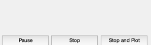
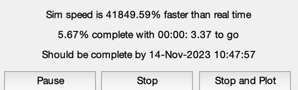
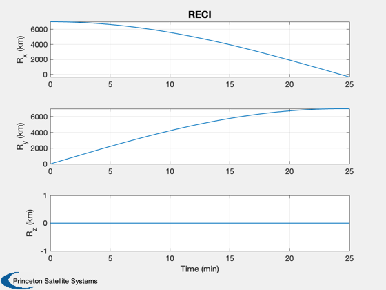
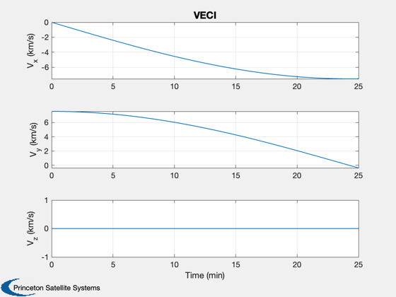
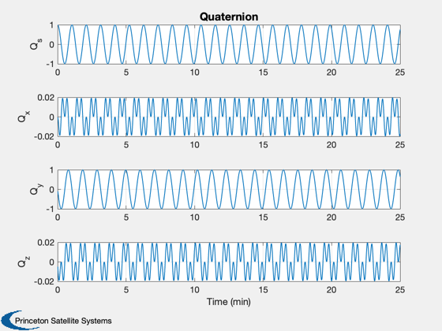
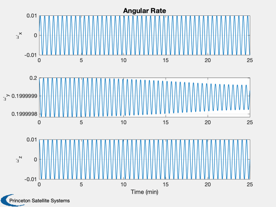
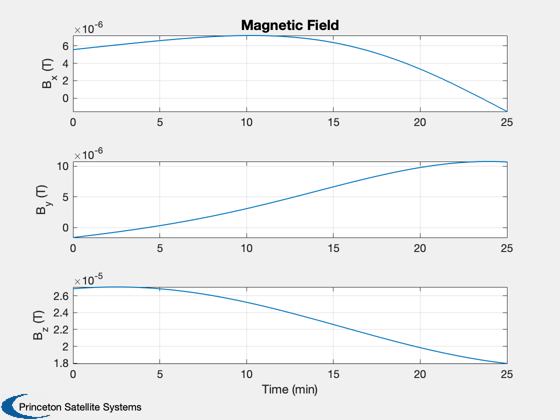

Demonstrates magnetic control.
------------------------------------------------------------------------ See also MagField, FRBWithMag, Constant, NPlot, Plot2D, PrintFig, TimeGUI, TimeLabl, RK4, Date2JD ------------------------------------------------------------------------
Contents
%-------------------------------------------------------------------------- % Copyright (c) 1995-2004, 2016 Princeton Satellite Systems, Inc. % All rights reserved. %-------------------------------------------------------------------------- % Since version 6.1 (2004) % 2016.1 - Switch to newer IGRF11 model (from 1995 data) for the Earth. % Also use a function handle for the RHS. %--------------------------------------------------------------------------
Setup
% Print plots to eps file %------------------------ printPlots = 0; % Global for the TimeGUI %------------------------ global simulationAction simulationAction = ' '; clear d; % Constants %---------- degToRad = pi/180; radToDeg = 180/pi; c45 = cos(45*degToRad); % The control sampling period and the simulation integration time step % -------------------------------------------------------------------- dTSim = 1; % Number of sim steps % ------------------- nSim = 1500; tEnd = nSim*dTSim; % Plot every nPMax steps % ----------------------- nPMax = 1; nPlot = nSim/nPMax; % Print the time to go message every nTTGo steps %------------------------------------------------ nTTGo = 100; % Gravity model %-------------- d.mu = Constant('mu earth'); % The external disturbance model % ------------------------------ d.tExt = [0.0;0.0;0.0]; % Spacecraft inertia % ------------------ d.inr = [2000,0,0;0,4000,0;0,0,2000]; d.invInr = inv(d.inr); % The magnetic dipole %-------------------- d.dipole = [1;2;3]; % Plotting arrays % --------------- tPlot = zeros( 1,nPlot); xPlot = zeros(16,nPlot); % Magnetic field %--------------- magFieldData = load('IGRF11'); % Initial conditions [r;v;q;omega] %--------------------------------- x = [7000;0;0; 0;sqrt(d.mu/7000);0; 1;0;0;0; 0;0.2;0.01]; % r in km and v in km/s t = 0; jD = Date2JD([2004 7 21 0 0 0]); % Julian date % Plotting controls %------------------ nP = 0; kP = 0; % Initialize the time display %---------------------------- [ ratioRealTime, tToGoMem ] = TimeGUI( nSim, 0, [], 0, dTSim, 'Magnetic Control Sim' );
Run the simulation
------------------
for k = 1:nSim % The magnetic field %------------------- d.bECI = MagField( x(1:3), jD, 2, magFieldData ); % Display the status message %--------------------------- [ ratioRealTime, tToGoMem ] = TimeGUI( nSim, k, tToGoMem, ratioRealTime, dTSim ); % Integrate one time step %------------------------ x = RK4( @FRBWithMag, x, dTSim, t, d ); % Update the time %---------------- t = t + dTSim; jD = jD + dTSim/86400; % Plotting % -------- if( nP == 0 ) kP = kP + 1; xPlot(:,kP) = [x;d.bECI]; tPlot(kP) = t; nP = nPMax - 1; else nP = nP - 1; end % Time control %------------- switch simulationAction case 'pause' pause simulationAction = ' '; case 'stop' return; case 'plot' break; end end
Plot results
% Adjust the plotting arrays if you stopped early %------------------------------------------------ j = 1:kP; tPlot = tPlot(j); xPlot = xPlot(:,j); % Nice units for time %-------------------- [tPlot,tL] = TimeLabl( tPlot ); % Plotting function %------------------ Plot2D( tPlot, xPlot( 1: 3,:), tL, {'R_x (km)';'R_y (km)';'R_z (km)'}, 'RECI' ) Plot2D( tPlot, xPlot( 4: 6,:), tL, {'V_x (km/s)';'V_y (km/s)';'V_z (km/s)'},'VECI' ) Plot2D( tPlot, xPlot( 7:10,:), tL, {'Q_s';'Q_x';'Q_y';'Q_z'}, 'Quaternion' ) Plot2D( tPlot, xPlot(11:13,:), tL, {'\omega_x';'\omega_y';'\omega_z'}, 'Angular Rate' ) Plot2D( tPlot, xPlot(14:16,:), tL, {'B_x (T)';'B_y (T)';'B_z (T)'}, 'Magnetic Field') % Save plots as eps files %------------------------ if( printPlots ) PrintFig(0,1,1,'Mag_R'); PrintFig(0,1,2,'Mag_V'); PrintFig(0,1,3,'Mag_Q'); PrintFig(0,1,4,'Mag_Omega'); PrintFig(0,1,5,'Mag_B'); end %-------------------------------------- % $Date$ % $Id: 183ed28603e9dc2a5dcc7dae3c147db30de5d99b $    